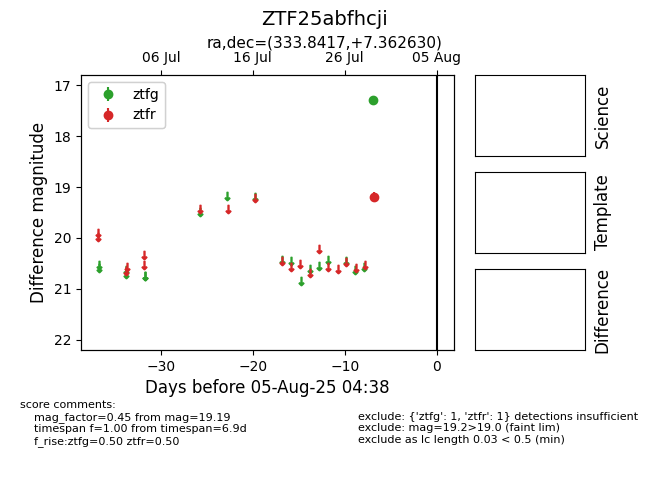

Target ZTF25abfhcji at 2025-08-05 04:38, see:
FINK: fink-portal.org/ZTF25abfhcji
Lasair: lasair-ztf.lsst.ac.uk/objects/ZTF25abfhcji
ALeRCE: alerce.online/object/ZTF25abfhcji
alt names
ZTF25abfhcji (ztf,fink)
coordinates:
equatorial (ra, dec) = (333.8417,+7.36263)
galactic (l, b) = (69.6328,-38.85429)
photometry
last ztfg=17.29, ztfr=19.19
1 ztfg, 1 ztfr detections
